Tian Lab
Tian Lab
PUBLICATIONS
(#, co-first author; *, co-corresponding author)
2024
24. Tian S*, Qin Y, Wu Y, Dong M*. Designing, performing, processing, and validating of a pooled CRISPR perturbation screen for bacterial toxins. Nature Protocols, 2024, (In press).
2023
23. Tian S*, Zhou N. Gaining New Insights into Fundamental Biological Pathways by Bacterial Toxin-Based Genetic Screens. Bioengineering, 2023, 10(8).
https://www.mdpi.com/2306-5354/10/8/884

Before PKU
22. He A#, Tian S#, Kopper O, Horan DJ, Chen P, Bronson RT, Sheng R, Wu H, Sui L, Zhou K, Tao L, Wu Q, Huang Y, Shen Z, Chen H, He X, Robling AG, Jin R, Clevers H, Xiang D*, Li Z*, Dong M*. Targeted inhibition of Wnt signaling with a bacterial toxin fragment suppresses breast cancer tumor-initiating/ chemo-resistant cells. PLoS Biology, 2023, 21(11).
https://journals.plos.org/plosbiology/article?id=10.1371/journal.pbio.3002353
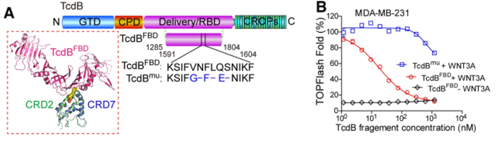News Reports:
https://mp.weixin.qq.com/s/Cs3fYYw0DlPb68ecYSuHrA
21. Chen B, Basak S, Chen P, Zhang C, Perry K, Tian S, Yu C, Dong M, Huang L, Bowen ME*, Jin R*. Structure and conformational dynamics of Clostridioides difficile toxin A. Life Science Alliance, 2022, 5(6).
https://www.life-science-alliance.org/content/5/6/e202201383.abstract
20. Xu Y#, Viswanatha R#, Sitsel O, Roderer D, Zhao H, Ashwood C, Voelker C, Tian S, Raunser S*, Perrimon N*, Dong M*. Genome-wide CRISPR Screens in Drosophila Cells Identify Vsg as a Tc Toxin Receptor. Nature, 2022, 610(7931).
https://www.nature.com/articles/s41586-022-05250-7
19. Tian S*, Xiong X, Zeng J, Wang S, Tremblay BJ, Chen P, Chen B, Liu M, Chen P, Sheng K, Zeve D, Qi W, Breault DT, Rodríguez C, Gerhard R, Jin R, Doxey AC*, Dong M*. Identification of TFPI as a receptor reveals recombination-driven receptor switching in Clostridioides difficile toxin B variants. Nature Communications, 2022, 13(1).
https://www.nature.com/articles/s41467-022-33964-9
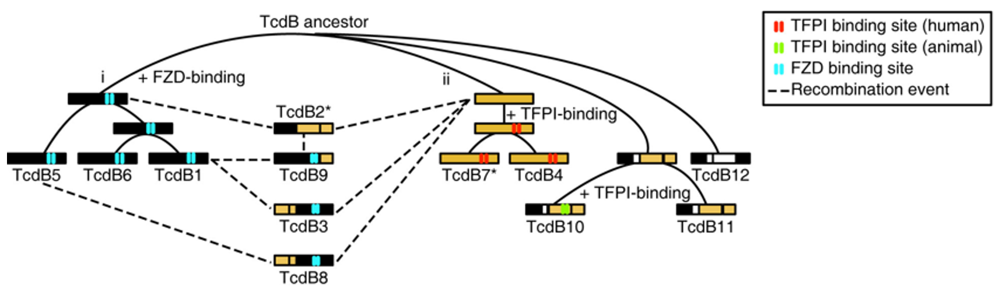18. Tian S#*, Liu Y#, Appleton E, Wang H, Church GM, Dong M*. Targeted intracellular delivery of Cas13 and Cas9 nucleases using bacterial toxin-based platforms. Cell Reports, 2022, 38(10).
https://www.cell.com/cell-reports/fulltext/S2211-1247(22)00209-1
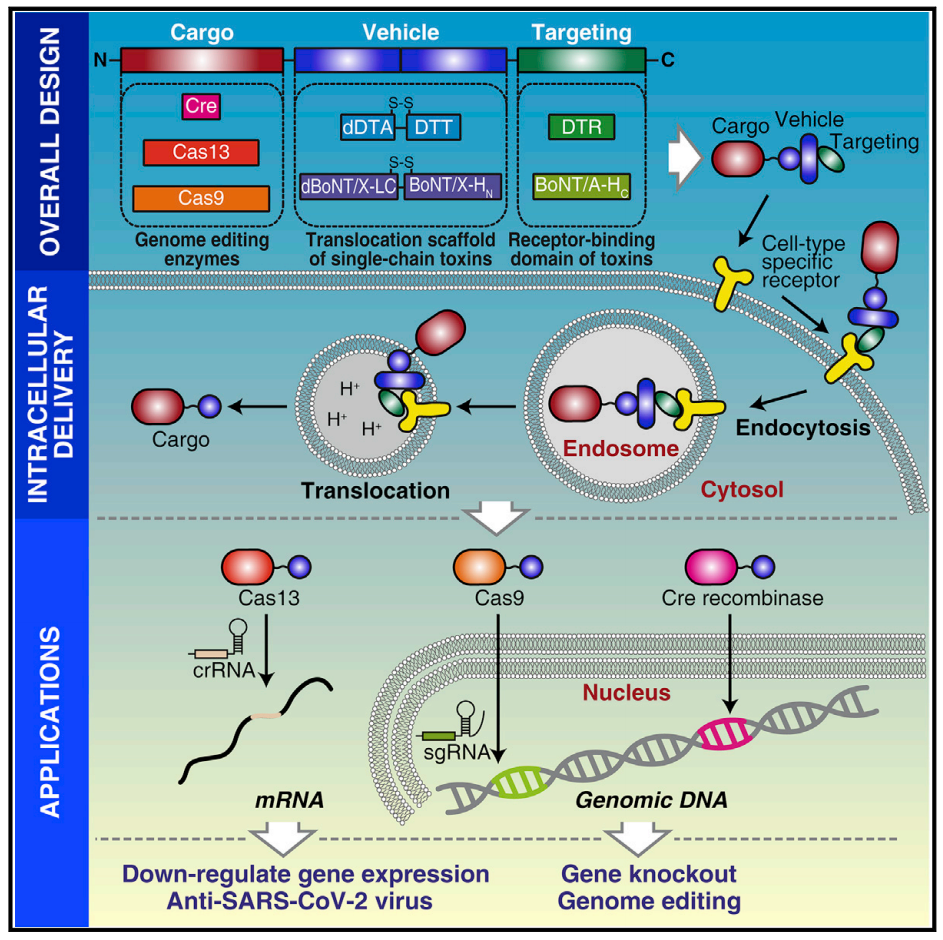News Reports:
https://mp.weixin.qq.com/s/vUXOOW6tSUrgKDlrc85EoA
17. Xiong X#, Tian S#, Yang P#, Lebreton F#, Bao H, Sheng K, Yin L, Chen P, Zhang J, Qi W, Ruan J, Wu H, Chen H, Breault DT, Wu H, Earl AM, Gilmore MS*, Abraham J*, Dong M*. Emerging enterococcus pore-forming toxins with MHC/HLA-I as receptors. Cell, 2022, 185(7).
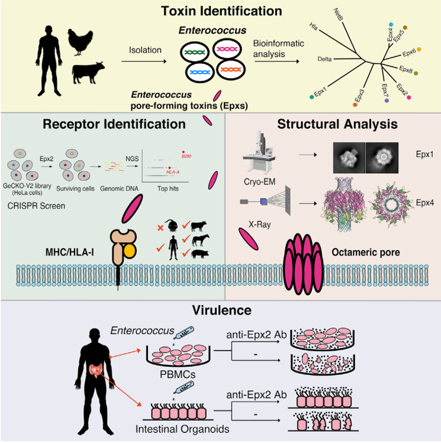Research Highlight, Nature Reviews Microbiology, 2022
News Reports:
https://mp.weixin.qq.com/s/ydUmA0lv8r-NBx3o5cClsg
https://new.qq.com/rain/a/20220308A01CN200
16. Kowarschik S, Schöllkopf J, Müller T, Tian S, Knerr J, Bakker H, Rein S, Dong M, Weber S, Grosse R, Schmidt G. Yersinia pseudotuberculosis cytotoxic necrotizing factor interacts with glycosaminoglycans. The FASEB Journal, 2021, 35(7).
https://faseb.onlinelibrary.wiley.com/doi/full/10.1096/fj.202001630R
15. Chen P#, Zeng J#, Liu Z, Thaker H, Wang S, Tian S, Zhang J, Tao L, Gutierrez CB, Xing L, Gerhard R. Huang L, Dong M*, Jin R*. Structural basis for CSPG4 as a receptor for TcdB and a therapeutic target in Clostridioides difficile infection. Nature Communications, 2021, 12(1).
https://www.nature.com/articles/s41467-021-23878-3
14. Shao DD, Straussberg R, Ahmed H, Khan A, Tian S, Hill RS, Smith RS, Majmundar AJ, Ameziane N, Neil JE, Yang E, Tenaiji AA, Jamuar SS, Schlaeger TM, Al-Saffar M, Hovel I, Al-Shamsi A, Basel-Salmon L, Amir AZ, Rento LM, Lim JY, Ganesan I, Shril S, Evrony G, Barkovich AJ, Bauer P, Dong M, Borck G, Beetz C, Al-Gazali L, Eyaid W, Walsh CA. A recurrent, homozygous EMC10 frameshift variant is associated with a syndrome of developmental delay with variable seizures and dysmorphic features. Genetics in Medicine, 2021, 23(6).
https://www.nature.com/articles/s41436-021-01097-x
13. Liu Y, Tian S, Thaker H, Dong M. Shiga toxins: an update on host factors and biomedical applications. Toxins, 2021, 13(3). [link: https://www.mdpi.com/2072-6651/13/3/222] 12. Liu Z, Zhang S, Chen P, Tian S, Zeng J, Perry K, Dong M, Jin R. Structural basis for selective modification of Rho and Ras GTPases by Clostridioides difficile toxin B. Science Advances, 2021, 7(43).
https://www.science.org/doi/full/10.1126/sciadv.abi4582
12. Liu Z, Zhang S, Chen P, Tian S, Zeng J, Perry K, Dong M, Jin R. Structural basis for selective modification of Rho and Ras GTPases by Clostridioides difficile toxin B. Science Advances, 2021, 7(43).
https://www.science.org/doi/full/10.1126/sciadv.abi4582
11. Tian S, Liu Y, Wu H, Liu H, Zeng J, Choi MY, Chen H, Gerhard R, Dong M. Genome-wide CRISPR screen identifies semaphorin 6A and 6B as receptors for Paeniclostridium sordellii toxin TcsL. Cell Host & Microbe, 2020, 27(5).
https://www.cell.com/cell-host-microbe/fulltext/S1931-3128(20)30171-2
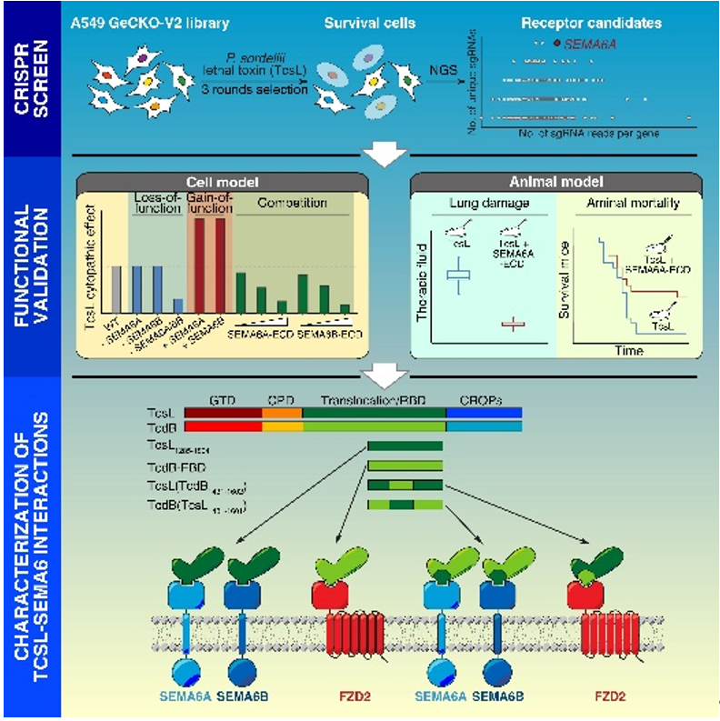Research Highlight, Signal Transduction and Targeted Therapy, 2020
https://www.nature.com/articles/s41392-020-00307-3
News Reports:
https://www.linkresearcher.com/theses/6112f422-c3da-4ddc-a2d5-8a0fcc331e4a
10. He A*, Ma L, Huang Y, Zhang H, Duan W, Li Z, Fei T, Yuan J, Wu H, Liu L, Bai Y, Dai W, Wang Y, Li H, Sun Y, Wang Y, Wang C, Yuan T, Yang Q, Tian S, Dong M, Sheng R*, Xiang D*. CDKL3 promotes osteosarcoma progression by activating Akt/PKB. Life Science Alliance, 2020, 3(5).
https://www.life-science-alliance.org/content/3/5/e202000648.abstract
9. Tao L#, Tian S#, Zhang J#, Liu Z, Robinson L, Miyashita SI, Breault DT, Gerhard R, Whelan S, Dong M. Sulfated glycosaminoglycans and low-density lipoprotein receptor contribute to Clostridium difficile toxin A entry into cells. Nature Microbiology, 2019, 4(10).
https://www.nature.com/articles/s41564-019-0464-z
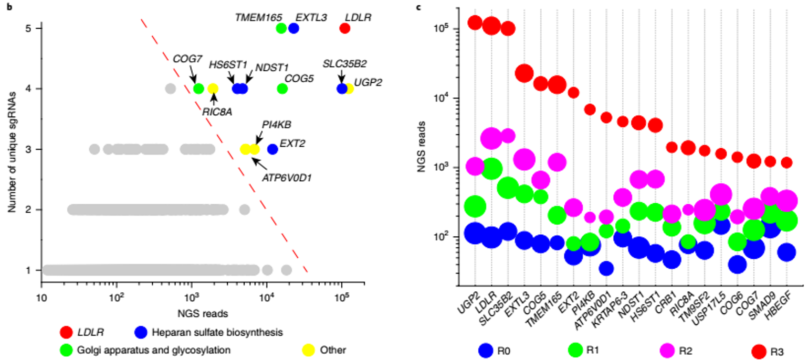News Reports:
https://answers.childrenshospital.org/c-difficile-toxin-a/
https://www.linkresearcher.com/theses/eb6a69c4-ba11-4a14-bab7-71f107bb170c
8. Tian S#, Wu Q#, Zhou B, Choi MY, Ding B, Yang W, Dong M. Proteomic analysis identifies membrane client proteins for the ER membrane protein complex. Cell Reports, 2019, 28(10).
https://www.cell.com/cell-reports/fulltext/S2211-1247(19)31039-3?dgcid=raven_jbs_etoc_email
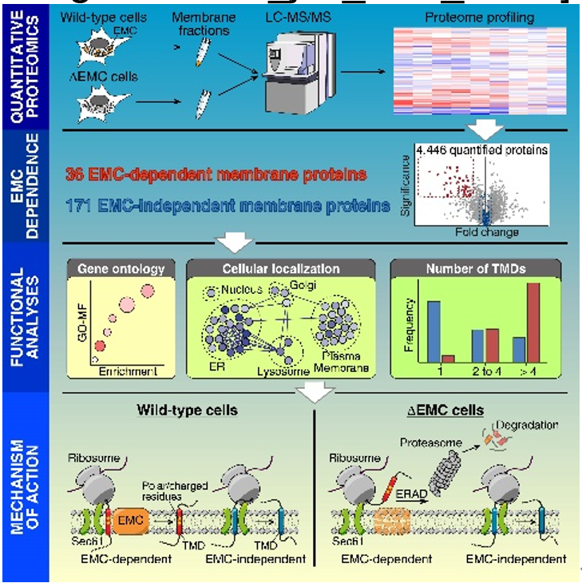News Reports:
https://wap.sciencenet.cn/blog-3404471-1197375.html
7. Tian S, Siu FM, Lok CN, Fung EYM*, Che CM*. Anticancer auranofin engages 3-hydroxy-3-methylglutaryl- coenzyme A reductase (HMGCR) as a target. Metallomics, 2019, 11(11).
https://academic.oup.com/metallomics/article/11/11/1925/5961738
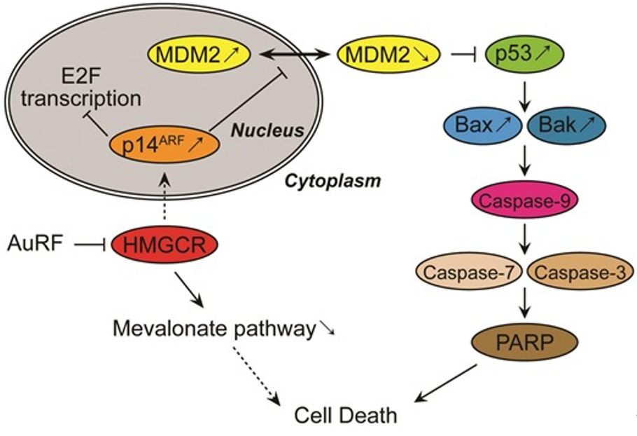6. Tian S, Muneeruddin K, Choi MY, Tao L, Bhuiyan RH, Ohmi Y, Furukawa K, Furukawa K, Boland S, Shaffer SA, Adams RM, Dong M. Genome-wide CRISPR screens for Shiga toxins and Ricin reveal Golgi proteins critical for glycosylation. PLoS Biology, 2018, 16(11).
https://journals.plos.org/plosbiology/article?id=10.1371/journal.pbio.2006951
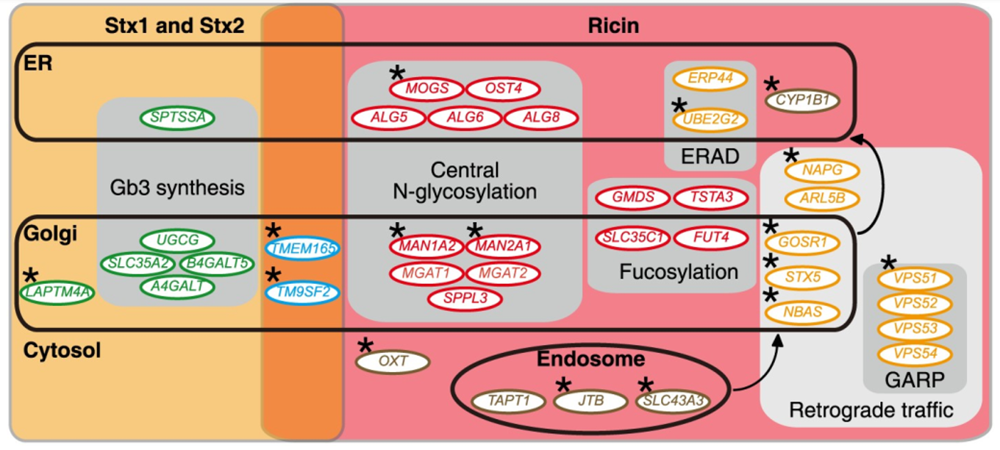News Reports:
link: https://sciencetrends.com/shedding-a-new-light-on-glycosylation/
https://www.sciencedaily.com/releases/2018/12/181210105407.htm
https://hms.harvard.edu/news/looking-lock
Our figure was cited by Wikipedia, term “Functional Genomics”:
https://en.wikipedia.org/wiki/Functional_genomics
5. Lin J, Wang N, Li Y, Liu Z, Tian S, Zhao L, Zheng Y, Liu S, Li S, Jin C, Xia B. LEC–BiFC: a new method for rapid assay of protein interaction. Biotechnic & Histochemistry, 2011, 86(4).
https://www.tandfonline.com/doi/abs/10.3109/10520295.2010.483068
4. Tian S, Siu FM, Kui SC, Lok CN, Che CM. Anticancer gold(I)-phosphine complexes as potent autophagy inducing agents. Chemical Communications., 2011, 47(33).
https://pubs.rsc.org/en/content/articlelanding/2011/cc/c1cc11820j/unauth
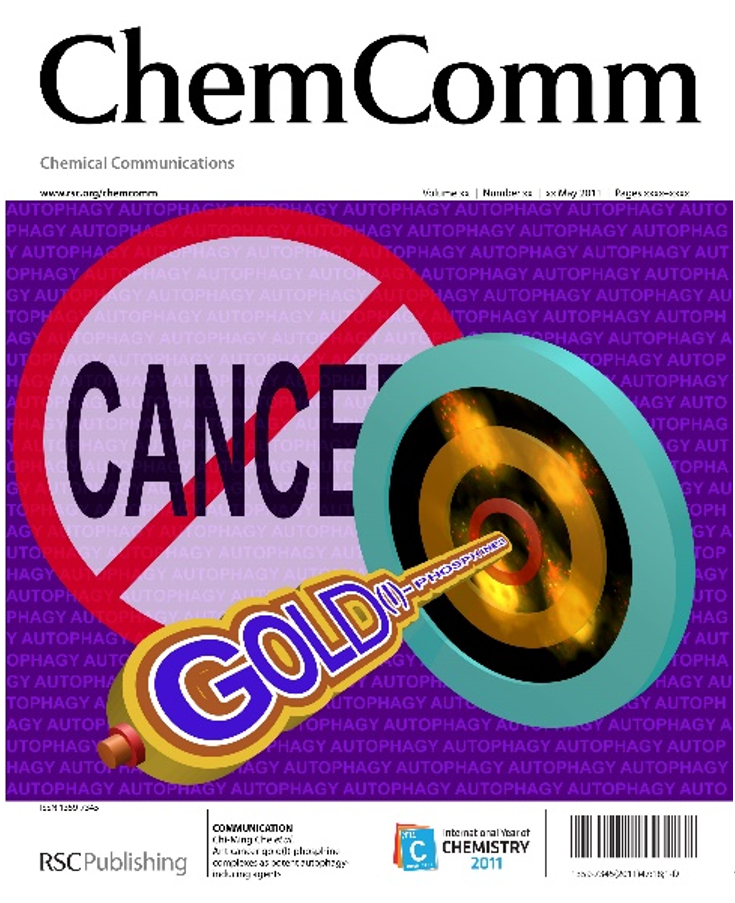3. Tian S#, Lin J#, Zhou J, Wang X, Li Y, Ren X, Yu W, Zhong W, Xiao J, Sheng F, Chen Y, Jin C, Li S, Zheng Z*, Xia B*. Beclin 1-independent autophagy induced by a Bcl-XL/Bcl-2 targeting compound, Z18., Autophagy, 2010, 6(8).
https://www.tandfonline.com/doi/abs/10.4161/auto.6.8.13336
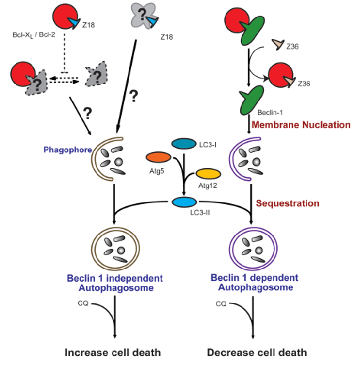2. Gordon BR#, Li Y#, Wang L, Sintsova A, van Bakel H, Tian S, Navarre WW, Xia B*, Liu J*. Lsr2 is a nucleoid-associated protein that targets AT-rich sequences and virulence genes in Mycobacterium tuberculosis. PNAS, 2010, 107(43).
https://www.pnas.org/doi/abs/10.1073/pnas.0913551107
1. Lin J, Zheng Z, Li Y, Yu W, Zhong W, Tian S, Zhao F, Ren X, Xiao J, Wang N, Liu S, Wang L, Sheng F, Chen Y, Jin C, Li S, Xia B. A novel Bcl-XL inhibitor Z36 that induces autophagic cell death in Hela cells. Autophagy, 2009, 5(3).
This site was created with the Nicepage